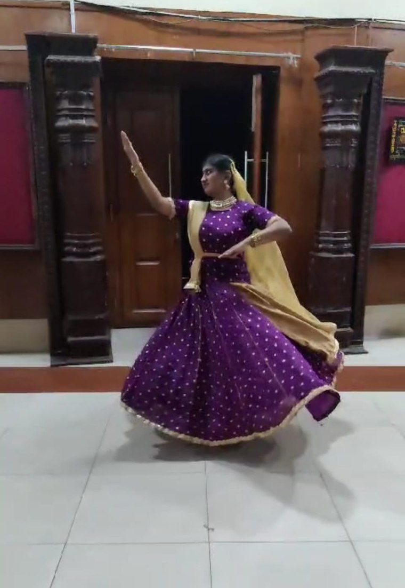

Rhythm, precision, and expression — the same qualities that define good research also define classical Indian dance.

Beyond research and technology, one of the most meaningful parts of my life is Kathak — a journey that has taught me discipline, patience, humility, and the joy of lifelong learning.
For the past three and a half years, I have been training under the guidance of Guru Sharat R. Prabhath at Prabhat Arts International, Bengaluru, one of India's premier performing arts institutions with a legacy dating back to 1930 through The Prabhath Kalavidaru. Kathak, one of the eight classical dance forms of India, is a beautiful synthesis of rhythm, storytelling, expression, and mathematics. Its intricate footwork, graceful movements, expressive abhinaya, and dynamic rhythmic structures continue to fascinate me every time I step into class.
My Guru, Sharat R. Prabhath, is a distinguished Kathak exponent, Carnatic vocalist, Harikatha artist, and choreographer. He is a disciple of the renowned dance duo Smt. Nirupama and Sri T. D. Rajendra, founders of the Abhinava Dance Company, as well as Pandit Rajendra Gangani, one of the foremost living exponents of the Jaipur Gharana and a recipient of the Sangeet Natak Akademi Award. Through my Guru, I have the privilege of learning from this rich artistic lineage, and I respectfully regard these great masters as my paramagurus.
My training is rooted primarily in the Jaipur Gharana, celebrated for its powerful footwork, rhythmic sophistication, and energetic style, while also drawing inspiration from the elegance, subtlety, and expressive storytelling of the Lucknow Gharana. Together, these traditions have shown me that Kathak is not merely a dance form — it is a discipline of thought, precision, creativity, and lifelong refinement.
As part of my journey, I have successfully completed the Akhil Bharatiya Gandharva Mahavidyalaya Mandal (ABGMV) examinations up to Praveshika (Purna) and continue to pursue higher levels of formal training. Along the way, I have had the opportunity to present Kathak repertoire at venues including Ravindra Kalakshetra, Bengaluru, as well as in performances and annual productions organized by Prabhat Arts International. Every examination, rehearsal, and stage performance has been another opportunity to grow as both a dancer and a learner.
What fascinates me most is how naturally Kathak complements the way I approach research. I love exploring new techniques, formulating models and algorithms, questioning assumptions, and investigating problems from first principles — whether in artificial intelligence, human-computer interaction, or data forensics. The same curiosity finds a home in Kathak.
Among all aspects of the dance, I am particularly drawn to bol, padhant, and the remarkable mathematics that underpins Kathak. The interplay of laya (tempo), tala (rhythmic cycles), fractions, permutations, improvisation, and the precision of resolving complex rhythmic compositions on the sam fascinates me immensely. There is something deeply satisfying about seeing mathematics transformed into movement and sound. Understanding how a composition is constructed, reciting it through padhant, and then expressing it through dance gives me the same excitement that I experience while designing an elegant algorithm or discovering a new solution to a research problem.
Research feels like fresh air to me, and Kathak offers that very same feeling. Both demand curiosity, discipline, humility, and an openness to continuous learning. A tukra practiced hundreds of times is not unlike an algorithm refined through countless iterations. In both, progress comes from observing carefully, embracing mistakes, refining continuously, and enjoying the journey as much as the destination.
I include Kathak on my academic portfolio not as a separate hobby, but as an integral part of who I am. The values it has instilled — discipline, perseverance, creativity, precision, and respect for tradition — shape the way I think as a researcher, engineer, and lifelong learner. I believe that the most meaningful ideas often emerge when seemingly different worlds intersect, and for me, Kathak and research are two expressions of the same pursuit: understanding complexity through curiosity, structure, and continuous refinement.
Each discipline reinforces the other in ways I didn't expect when I began either.